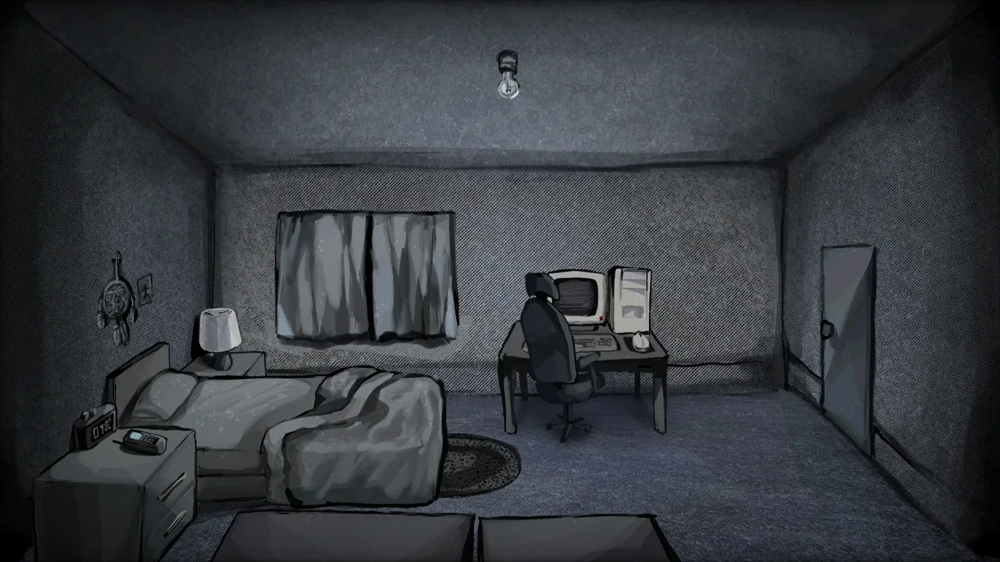

About How to date a Sleep Paralysis Demon
How to date a Sleep Paralysis Demon places you inside a single bedroom where the ordinary stops feeling ordinary. Dust wanted to meet something strange. He got his wish〞and the night becomes a survival problem with a presence that does not explain itself.
The game uses standard Ren'Py mechanics: click to advance dialogue, make choices, and interact with objects around the room. But the tension is anything but standard. Small choices shift how the demon behaves, what it says, and whether the room feels safe or suffocating.
Tonal whiplash is the point. One moment lands as an awkward joke. The next, the room no longer feels like yours. The demo trusts you to notice small details, and that trust makes the scariest beats feel earned rather than cheap. The experience is short, intense, and designed to be replayed.
